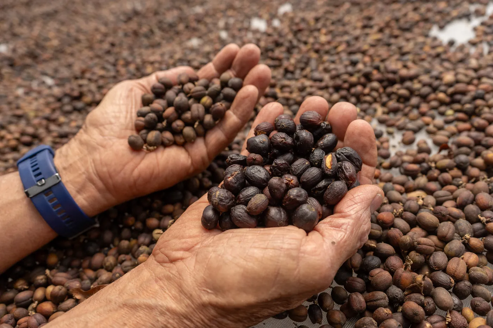
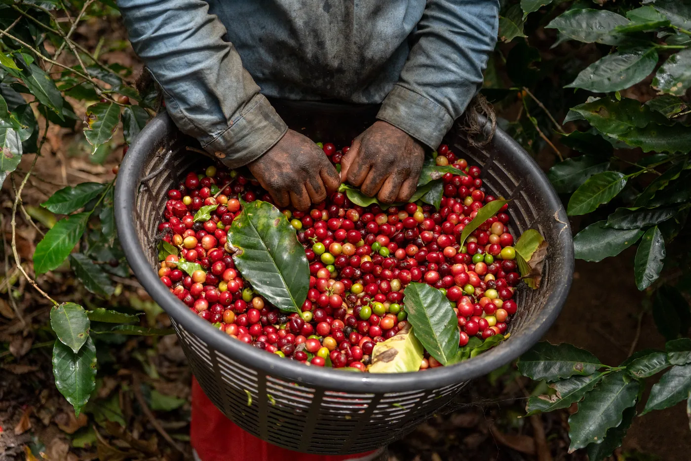

Mission


Naranjo, Alajuela
Coffee grown with purpose.
We share what we learn farm by farm to care for the soil, restore biodiversity and strengthen life in our communities.
Our association
About us
There are ways to produce coffee.
And there are ways to work the land with purpose.
NARECAFÉ was born in Naranjo from the joint work of producers who decided to do things differently: care for the soil, restore biodiversity and strengthen life in their communities.
It is not only what is grown.
It is how it is grown, with whom and for what.
Institutional history to be completed
Space reserved for the founding year, Field School and other verifiable information.


Vision
To be a leading organization in sustainable and regenerative coffee growing, capable of transforming Naranjo's productive landscape through practices that protect the environment, strengthen the family economy and generate high-value coffee for present and future generations.
On the farm
Regenerative coffee, shared learning
These practices guide NARECAFÉ's work and can be understood simply through the experience of the farms.
Living soil
The soil is a fundamental part of the farm and of its ability to support life.
On-farm bioinputs
Learning is shared through the resources and practices developed on each farm.
Shade-grown coffee
Coffee coexists with trees and biodiversity as part of the productive landscape.

Learning together
Services
Specific service information is being prepared. For now, we present the confirmed areas of work.
On-farm support for coffee producers
Information to be completed.
Coffee growing courses
Information to be completed.
Farms, people and learning
Gallery
A visual journey through regenerative coffee growing in Naranjo.
Let's talk
Contact
If you would like to learn about NARECAFÉ or communicate with the association, you may use any of our channels.
- WhatsApp+506 8851 0663
- Emailnarecafecr@gmail.com
- Instagram@narecafe.njo
- FacebookView profile
- TikTok@narecafe.njo